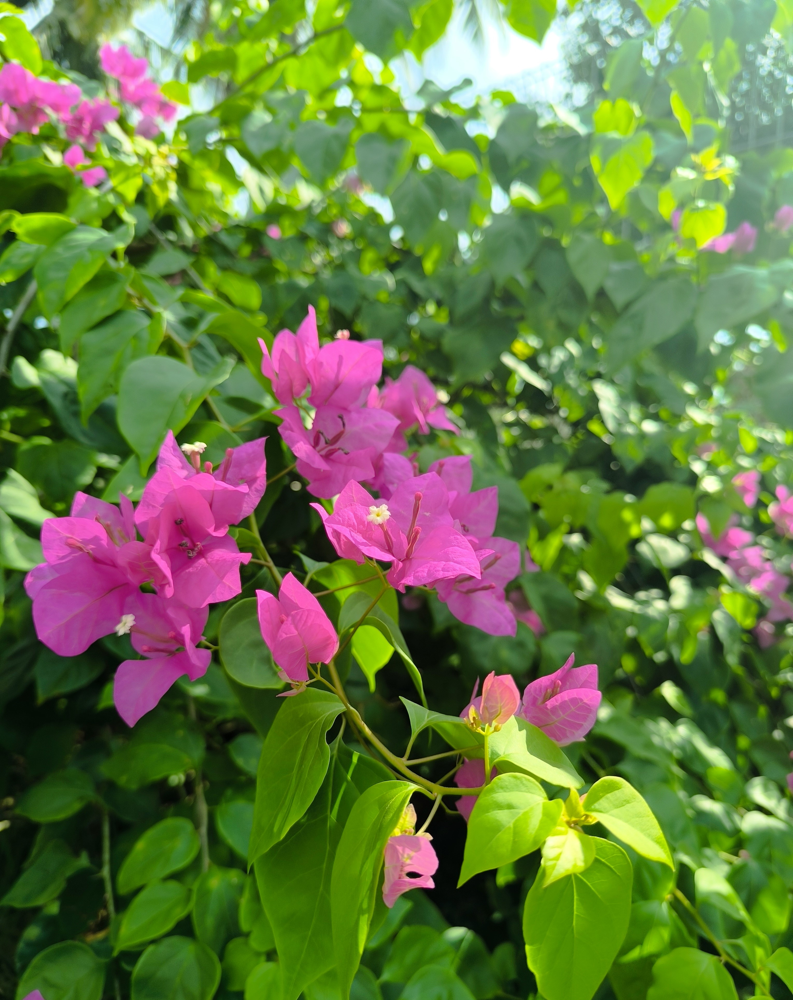

Happy Birthday Intan

Kepada Intan Tasnim Damia:
Selamat ulang tahunn wakk jngn lupa study akk pengawas.sorry xde hadiah huahahah 1 tahun lagi ade la kot ahhaah. well mesti kau nak tau kan aku siapa
kan? sorry rahsia hahahaha tunggu bulan 12 ade lah hint sikit,fyi aku admire kau dari jauh dh lama la gak huhu
and aku x minat nak couple and reley ke pebenda tah trend maksiat skrg tu aku saje nak kacau kau harini maklum birthaday tuan puteri yng cantiks nih
tolong bagi tahu tau klulah tuan puteri dh suke org ke ape pls ckp jngn bagi aku harapan okei and harinikan birthday kau lepas tu exam siannyee ahahah and lagi
sekali happy birthday. happy je jngn cedih exam ni senang okeii jngn stress waktu tugas hahahha bye bye aslmm jg diri cantik
sorry aa hambar HAHAHAHA 12/12 la aku perbaiki lagi okei tunggu tau!!.boleh tak nak tau intann pakai fon ape?
sorry klu ganggu kau,buat ape kau rasa tak selesa ke maklum saya stranger yng nak kenal lagi dlm pasal kau
kata terakhir dari saya"jangan dikau menabur puspa ke dalam sukma andai cinta mu niskala"
wahai gadis cantik dan terjaga dengan baik maruah dan ahklaknya tetaplah jadi gadis yng mahal diluar sana
btw cantik la baju raya kau haahahha tapi kau memang dh cantiks byee-x
for more info